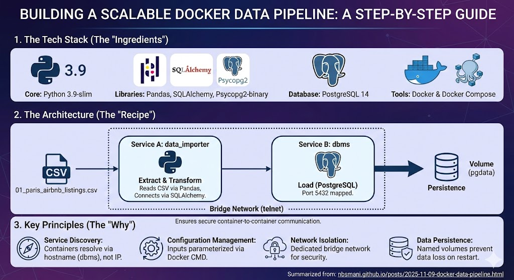

A Data Pipeline is a distributed system. Start Architecting It Like One
A data pipeline already a distributed system since it has multiple component services. Treating it anything less is why pipelines break when moved from a local machine to production. To build a system that works everywhere, one must consider service discovery, configuration management and network isolation right from the beginning.
Let us a build production ready and automated data ingestion pipeline using docker. We will first build a simple python app that takes a csv and stores in a PostgreSQL database, then evolves into a multi-container architecture where a data-importer service automatically ingests data into a dedicated DBMS.

For this data pipeline, lets get Paris AirBnB Listings data and build that data importer app. This app will take this csv data and store it into a database inside the PostgreSQL container. To make this app usable for any data, we will parametrize all the input variables.
#data_importer.py
import os
import sys
import pandas as pd
from sqlalchemy import create_engine,URL
#input_variables
input_file = sys.argv[1]
username = sys.argv[2]
password = sys.argv[3]
host = sys.argv[4]
port = sys.argv[5]
database = sys.argv[6]
table_name = sys.argv[7]
#read the csv and store into a dataframe
df = pd.read_csv(input_file)
#Create an engine to connect to the database
dbms_url = URL.create(
"postgresql", #drivername is handled by SQLAlchemy. Never changes b/w envs.
username = username,
password = password,
host = host,
port = port,
database = database
)
engine = create_engine(dbms_url,echo = False)
#We can directly push the df to the PostgresSQL server
df.to_sql(name = table_name, con = engine, if_exists = 'replace')This app takes a CSV file and creates a URL object with parameterized connection details. In isolated environments, Docker’s DNS system resolves service names to container IPs automatically. Everything is parameterized for reuse.
Containerizing the Application
We can containerize this app simply using a Dockerfile. Assuming this script is stored under ./src/data_importer.py and the downloaded data is placed in data/01_paris_airbnb_listings.csv. We will need pandas, sqlalchemy and psycopg2 as dependencies.
Let’s create a requirements.txt in the current working directory that will be used to build the docker image.
pandas==2.3.1
numpy==2.0.2
SQLAlchemy==2.0.43
psycopg2-binary==2.9.11We will use python 3.9-slim as a base image and install the dependencies copy the data and script. We will run the app inside the container and the arguments variables can be passed using the CMD operator.
FROM python:3.9-slim
WORKDIR /data_importer
COPY requirements.txt .
RUN pip install --no-cache-dir -r requirements.txt
COPY ./data ./src ./
ENTRYPOINT ["python","data_importer.py"]
CMD ["01_paris_airbnb_listings.csv","sqluser","secret","dbms","5432", "global_data","paris_airbnb" ]The image can be built using.
docker build -t data_importer .The above command will yield an image named data_importer.
Orchestrating with Docker Compose
Once the image is successfully built, we can create a distributed system using docker-compose. We will use PostgreSQL 14 image for database and create a database service dbms. We will use a named volume pgdata for data persistence and use a mounted volume to enable communication between the data_importer container. The mounted volume will be mapped between the working directory of the data_importer app and the physical location in the local machine. This way, the system can take any data inside the local data directory and import to the SQL database automatically and securely. We will use a bridge network named telnet to enable container-to -container communication. lets save these parameters in a docker-compose.yml in the current working directory.
services :
dbms :
image : postgres:14
environment:
POSTGRES_DB: global_data
POSTGRES_USER: sqluser
POSTGRES_PASSWORD: secret
volumes :
- pgdata:/var/lib/postgresql/data
- ./data:/imported_data
ports :
- "5432:5432"
networks :
- telnet
dataimporter:
image: data_importer
depends_on:
- dbms
networks:
- telnet
command: ["01_paris_airbnb_listings.csv","sqluser","secret","dbms","5432","global_data","paris_airbnb_data"]
volumes :
pgdata :
networks :
telnet :
driver : bridgeDeployment
The complete ETL pipeline can be deployed using:
docker-compose up -dUpon successful execution, the data would be safely stored inside the global_data database in the dbms server. This can be verified using a docker exec command.
docker exec -it sql_dbms_1 psql -U sqluser -d global_data Which yields
psql (14.19 (Debian 14.19-1.pgdg13+1))
Type "help" for help.
global_data=# \dt
List of relations
Schema | Name | Type | Owner
--------+-------------------+-------+---------
public | paris_airbnb_data | table | sqluser
(1 row)
global_data=#Note that the table_name is correctly named as paris_airbnb_data contary to paris_airbnb as mentioned in the Dockerfile. This suggests that the data is correctly passed from the argument variables defined in the command operator in the docker-compose.yml.
Summary
In this guide, we transformed a simple Python app into a production-ready data pipeline by adopting distributed systems principles.
Service Discovery: Containers communicate through Docker DNS (
dbms) instead of hard-coded IPs.Configuration Management: All parameters are externalized through CLI arguments and environment variables.
Network Isolation: Secure bridge network enables container-to-container communication.
Data Persistence: Named volumes ensure database survival across container restarts.
Orchestration: Docker Compose manages multi-service dependencies and lifecycle.
Treating data pipelines as a distributed systems from the beginning eliminates the system breakdown across environments and creates infrastructure that scales from local development to production deployment.
The complete pipeline is available in GitHub.